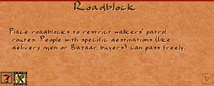

Roadblock

The Roadblock is placed on any existing road tile to act as a filter for roaming walkers. Each walker category — market traders, priests, entertainers, physicians, and others — can be individually allowed or blocked. Destination walkers such as cartpushers, buyers, and immigrants always pass through regardless of settings.
Roadblocks do not sever road connectivity. Buildings on either side of a Roadblock remain on the same network and destination walkers can still reach any building. Only roaming walkers that reach the Roadblock tile consult the permission list before deciding whether to continue or turn back.
Stats
- Cost (Normal)
- 5 Db
- Cost by difficulty
- VE 1 · Easy 2 · Normal 5 · Hard 10 · VH 20
- Fire / Damage risk
- None (fire-proof, damage-proof)
- Labor category
- Government
- Placement
- On existing road tiles only
Overview
Ancient Egyptian cities were organised into distinct quarters — residential, religious, administrative, and industrial — each with its own character and purpose. Controlling the flow of people between zones was a practical necessity: workers heading to quarries should not wander through the temple precinct, and market women did not need to enter the military barracks.
In the game the Roadblock provides exactly this kind of zonal separation without the cost or permanence of walls. A single tile placed at a street entrance turns that road into a selective checkpoint, letting you decide which services reach which parts of the city.
Mechanics
How it works
When a roaming walker reaches a Roadblock tile, the game checks the walker's category against the Roadblock's permission bitmask:
- If the walker's category is allowed, she passes through and continues roaming normally.
- If the walker's category is blocked, she turns around and roams back the direction she came from.
Destination walkers (Bazaar Buyer, Cartpusher, immigrant, tax collector on a direct trip, etc.) are never stopped — they pathfind through Roadblock tiles as if the building were not there. The connectivity check that determines which buildings can reach which storage buildings also ignores Roadblocks entirely.
Placement
A Roadblock must be placed on an existing Road tile. It occupies that tile and is removed with the demolish tool; demolishing returns the underlying road tile. You can place multiple Roadblocks on parallel roads leading into a zone to ensure complete coverage — a single Roadblock only affects walkers who attempt to use that specific tile.
Ordering walkers
Right-click a Roadblock and press Orders to open the permission panel. Each row shows a walker category icon and its current Allow / Block state. Click a row to toggle it. Changes take effect immediately — walkers already beyond the Roadblock are not recalled.
Permissions
There are seven configurable walker categories. All are allowed by default.
| Permission | Walkers affected | Default |
|---|---|---|
| Maintenance | Architect, Fire Marshal | Allow |
| Priest | Temple priests | Allow |
| Market | Bazaar Trader | Allow |
| Entertainer | Juggler, Dancer, Musician | Allow |
| Education | Teacher, Librarian | Allow |
| Medicine | Physician, Apothecary | Allow |
| Tax Collector | Tax Collector | Allow |
Common configurations
- Separating service zones. If two housing clusters share a junction, place a Roadblock between them and allow only market and maintenance. Each cluster's own service buildings serve only that cluster.
- Industrial zones. Block market traders, entertainers, and priests from entering the production district — they have no one to serve there and waste patrol steps.
- Tax relief. Temporarily block tax collectors from a struggling housing block to give residents time to recover before taxation resumes.
- Religion separation. In cities with multiple temples, block priests at zone boundaries so each god's walker covers only the housing intended for that temple.
Tips
- One Roadblock per road leading into a zone is enough. If a zone has two road entrances, place one Roadblock at each.
- Roadblocks are cheap (5 Db on Normal) and fire-proof — place them freely without worrying about maintenance.
- If a service walker is not covering the expected area, check whether a Roadblock from a neighbouring zone is accidentally blocking her. The permission panel shows the current state of each category.
- Blocking maintenance workers (Architect and Fire Marshal) from a zone leaves its buildings unprotected from damage and fire. Only do this deliberately and temporarily.
- Roadblocks work well with Bazaar Special Orders for fine-grained supply control: Special Orders determine which goods a Bazaar stocks; Roadblocks determine which streets its trader visits.
Developer reference
All paths relative to the repository root.
Building config — src/scripts/buildings.js
The Roadblock definition is in src/scripts/buildings.js at the building_roadblock block (line 506).
building_roadblock = {
animations : {
preview : { pack:PACK_GENERAL, id:98 }
base : { pack:PACK_GENERAL, id:98 }
minimap : { pack:PACK_GENERAL, id:149, offset:5 }
},
building_size : 1,
fire_proof : true,
damage_proof : true,
meta : { help_id: 358, text_id: 155 }
labor_category : LABOR_CATEGORY_GOVERNMENT,
cost : [ 1, 2, 5, 10, 20 ]
}C++ implementation — src/building/building_roadblock.h / .cpp
src/building/building_roadblock.h declares the class hierarchy:
class building_routeblock : public building_impl {
struct runtime_data_t {
short exceptions; // bitmask — 1 bit per e_permission
};
virtual void set_permission(e_permission) {}
virtual bool get_permission(e_permission) { return false; }
};
class building_roadblock : public building_routeblock {
// set_permission XORs the bit — toggles the permission on/off
virtual bool target_route_tile_blocked(int grid_offset) const override;
};The exceptions bitmask stores one bit per e_permission value. A set bit means that permission is granted (the walker can pass). set_permission() XOR-flips a bit, toggling the state. get_permission() reads a single bit.
target_route_tile_blocked() always returns false — Roadblocks never block routing or destination walkers. The filtering of roaming walkers happens in the figure movement code via map_get_adjacent_road_tiles_for_roaming() in src/grid/road_access.h, which passes the walker's permission category and skips tiles blocked by a Roadblock.
The permission enum is defined in src/city/constants.h:
enum e_permission : uint8_t {
epermission_none = 0,
epermission_maintenance = 1,
epermission_priest = 2,
epermission_market = 3,
epermission_entertainer = 4,
epermission_education = 5,
epermission_medicine = 6,
epermission_tax_collector = 7,
epermission_count
};Info window — src/window/window_roadblock_info.cpp
The right-click panel is registered as info_window_roadblock in src/window/window_roadblock_info.cpp. It loads its layout from roadblock_info_window in the UI config.
Key interactive elements:
- Orders button — switches the panel to the permission list view (
c.storage_show_special_orders = true). - Permission rows — seven
generic_buttonentries mapped totoggle_figure_state(index, …), which callsbuilding_roadblock::set_permission((e_permission)index)to XOR-flip the permission bit.
Permission buttons are at y-offsets 4, 36, 68, 100, 132, 164, 192 (32 px apart) within the orders panel.